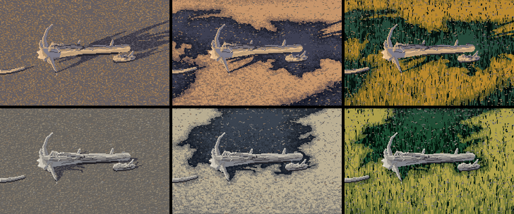
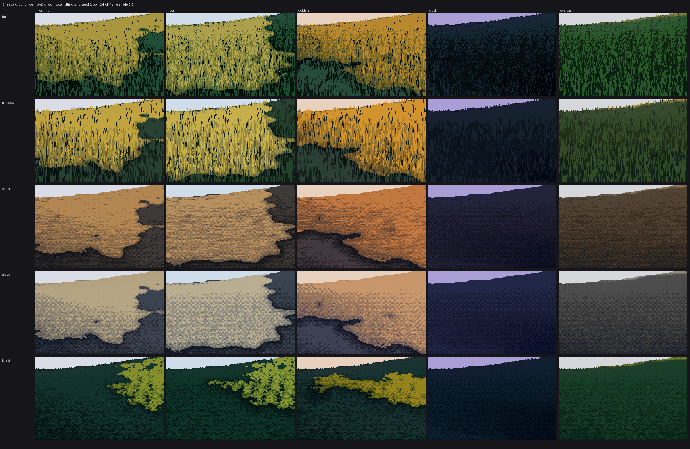

Back to the course. Previous: Texture inside the mass.
Ground is a stage, and it succeeds when the thing on it reads better. The critic's test for the studio's earlier grounds was simple: is the ground louder than the object? It always was. This lesson shows how to stand another student's object on the painted ground, and the one mistake to avoid.

sheet_integration_driftwood_3x. The driftwood student's logs, root wad and pile, rendered by their own unmodified code. Left: their gravel. Middle: my gravel with off-frame shade and some moisture. Right: my turf. Top row golden hour, bottom row noon.
Ask the object's renderer for three things: its pixels, its contact pixels, and its cast-shadow mask. Paint the ground with that mask, then composite. From code/s6_driftwood.py:
cv, buf, sh = dwr.render(logs, cam, li, seed=seed, stone_m=0.06, opts=dict(gravel=True)) # theirs
wood_rgb = dwr.to_rgb(cv, dwp.ramps(hour, 0.0))
wood = cv.mat != GRAVEL
# contact: the darkest ground pixels they drew right under the wood are theirs to keep
near = np.zeros_like(wood); near[:-1] |= wood[1:]; near[1:] |= wood[:-1]
contact = (~wood) & (cv.step == 0) & near
g = ground.paint_ground(W, H, ground='gravel', landform='flat', ppm=scale, pitch=pitch,
hour=hour, sun=(20, el), shadow_mask=sh & ~wood, seed=seed, ...)
out = g.rgb.copy()
out[wood | contact] = wood_rgb[wood | contact]
Inside paint_ground, the mask simply removes sunlight before the value plan:
L['sunvis'] = L['sunvis'] * (1 - shadow_mask.astype(float))
So the object's shadow is the ground in its shadow family. It keeps its texture, it follows the landform, and the families rule keeps it clean. That's the studio's cast-shadow rule, "the ground itself, two steps darker, with its texture kept inside", and here you get it for free.
Things to match between the two painters:
ppm is the object renderer's scale.In the middle column's top cell, the logs sit inside a big off-frame shade mass but stay fully lit. The ground says "shadow" and the object says "sun". The critic caught this, and it's the classic mistake when two painters meet. Two fixes:
plan (for example 'far' or 'side-left'), or pass a lower shade.g.lit under the object's footprint, and render the object in its shadow ramp where the ground is in shadow.The first is usually right. An object is often the reason for the picture, so give it the light.
The critic's other note on this sheet: the shade shapes here read as coastlines, not as one or two long, gently curving edges. Use a larger shade_scale behind a hero object.
paint_ground returns world buffers along with the picture:
g.depth, g.wx, g.wz, g.h (where the ground is in the world);g.lit (which family each pixel is in);g.mat, g.band, g.step (the index canvas).That's enough to:
g.relight(hour).
Sheet A: ground type × hour. Each cell is painted at its hour, sun included. g.relight(hour) goes further: it keeps one index canvas and swaps only the palette, as Ferrari's own files do.